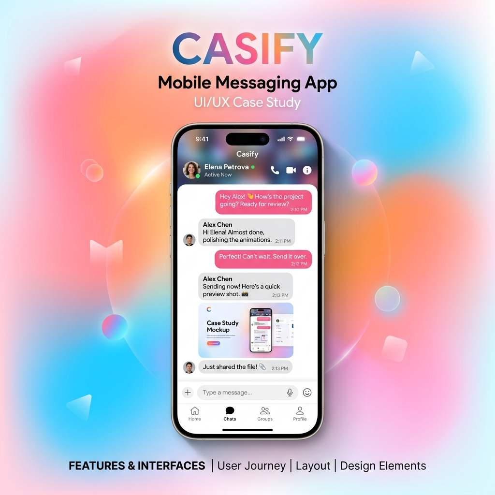
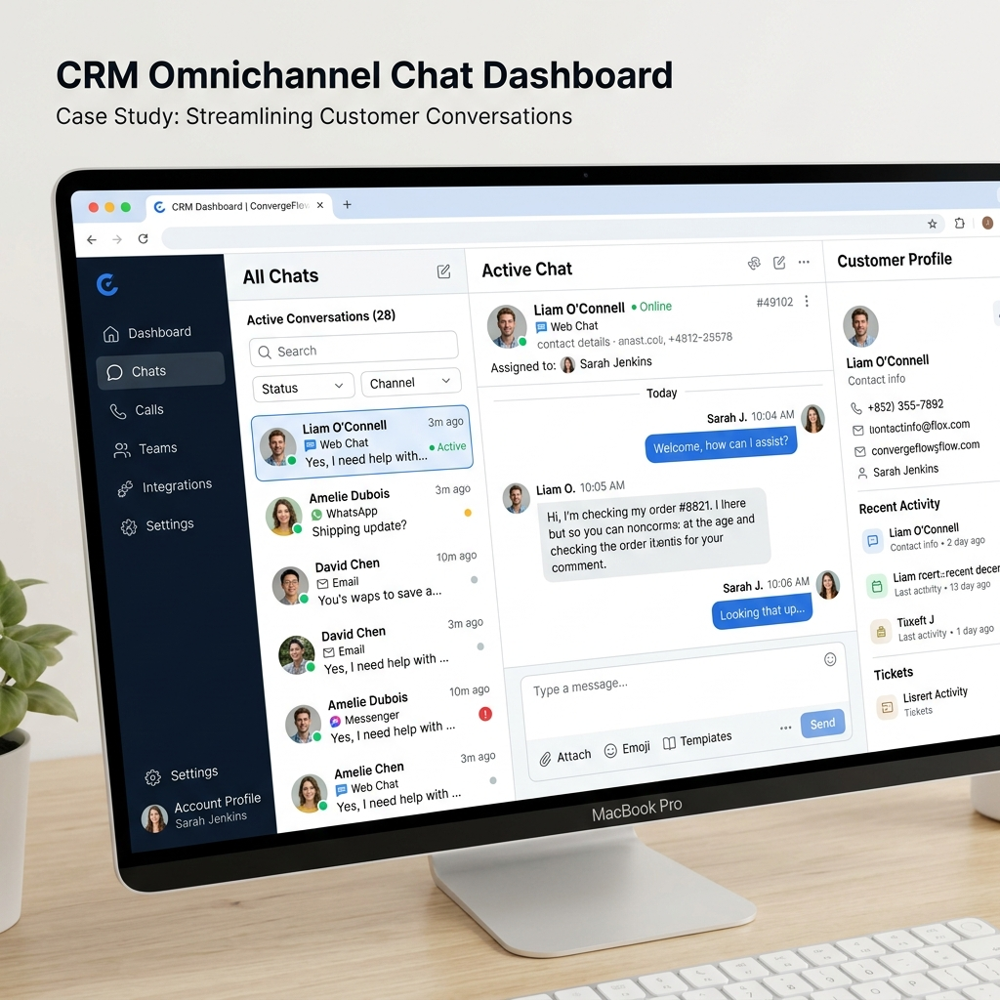
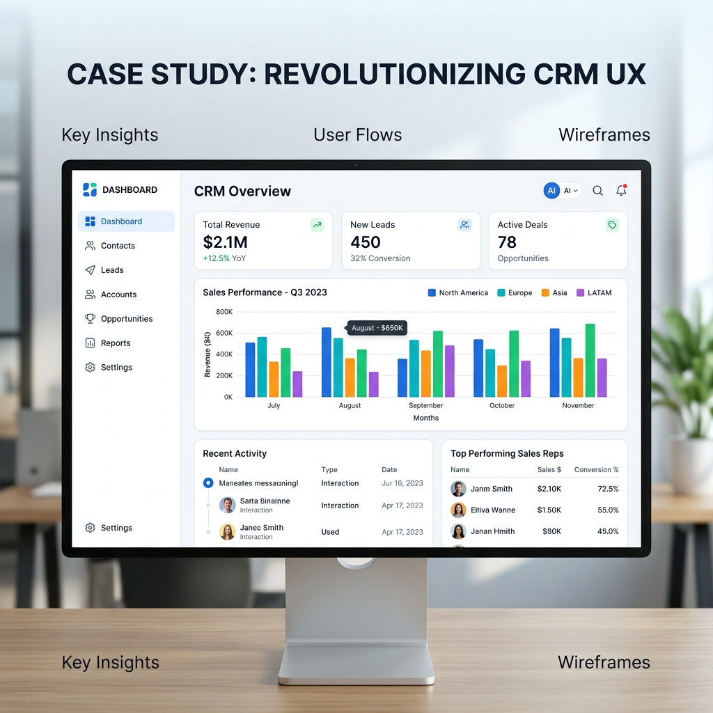
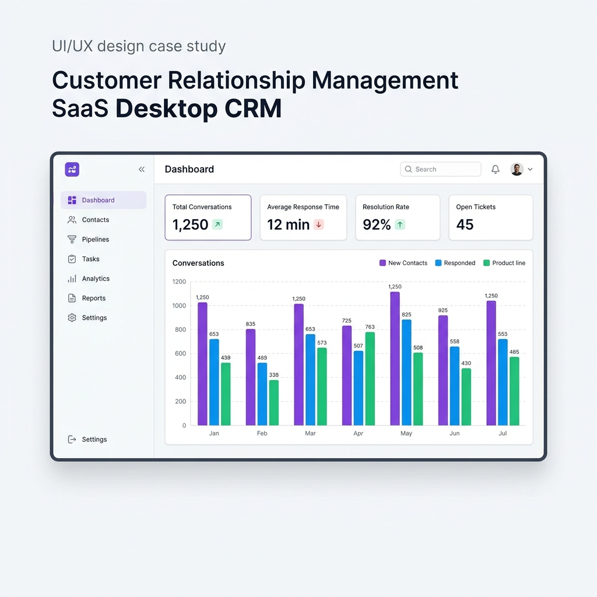
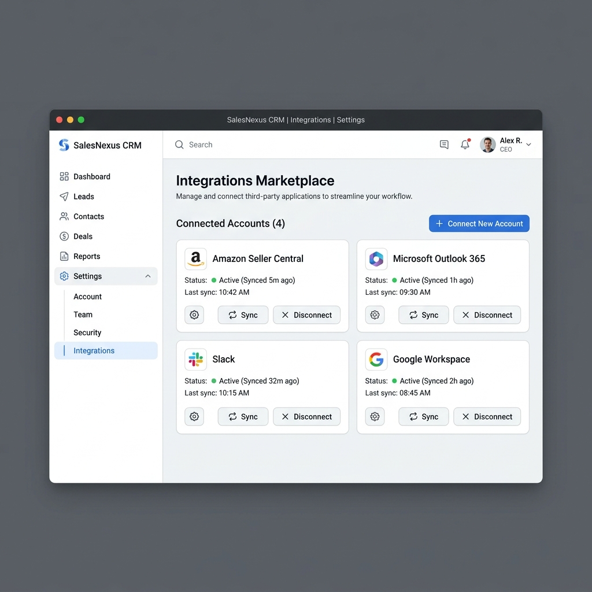
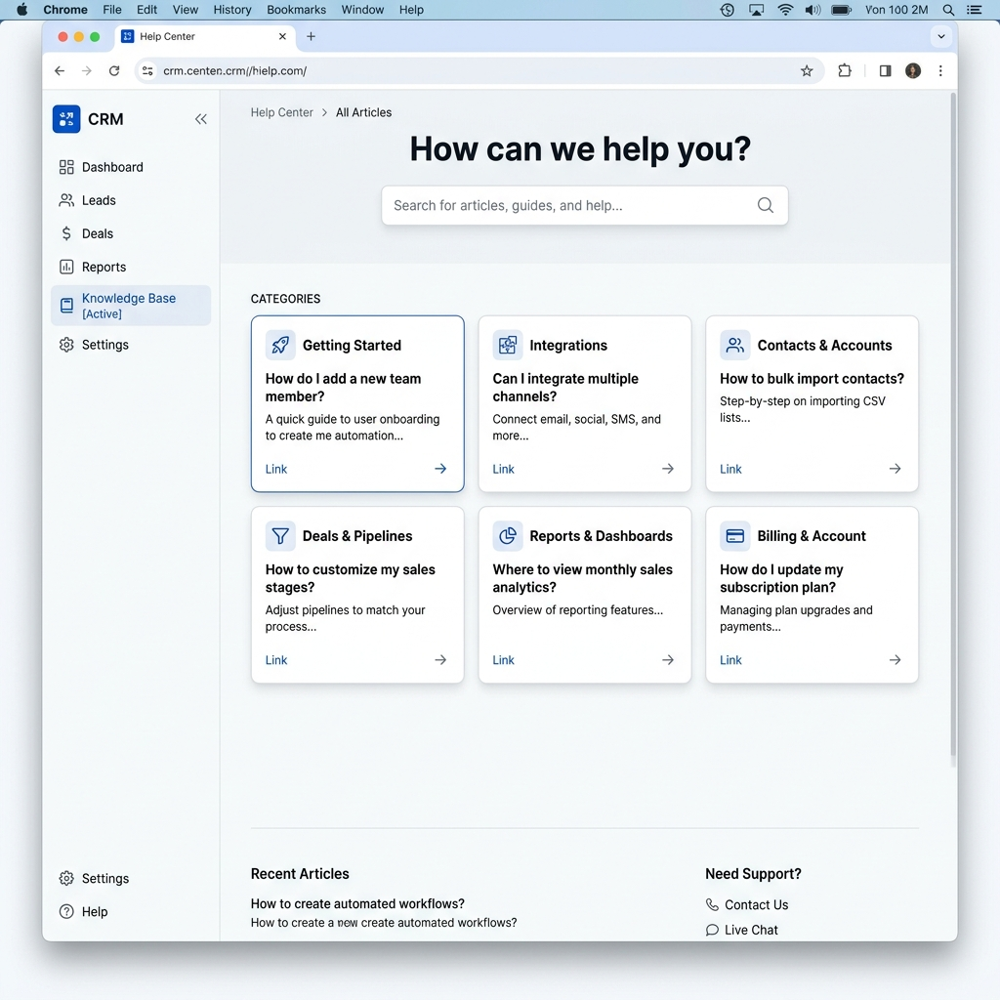
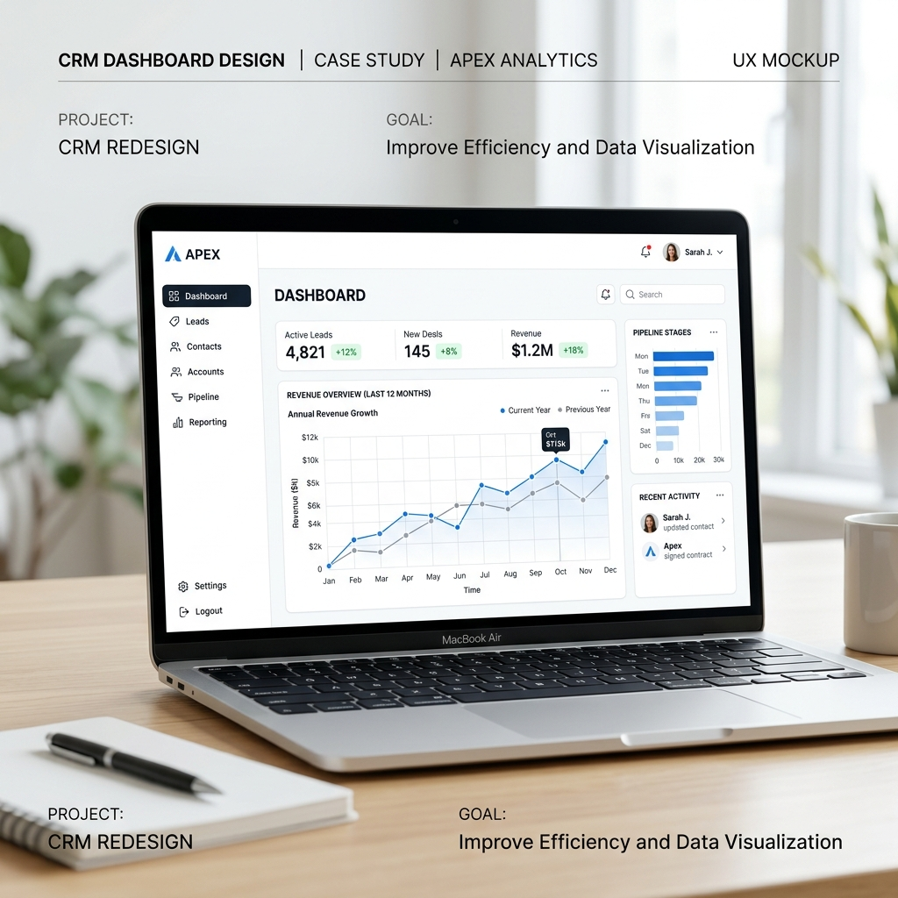

Haystack | AI-Powered Omni-Channel CRM & Support Automation
Overview
Haystack is a comprehensive, AI-driven CRM platform built to handle large-scale omni-channel communication for businesses across the globe. It consolidates all incoming customer conversations — from WhatsApp, Instagram, Email, Messenger, Slack and more — into a single unified inbox, powered by smart AI agents that handle routine queries and route complex issues to live agents.

The Problem
A major retail client struggled with managing customer inquiries across various platforms (Email, WhatsApp, Instagram, etc.). Support agents found it overwhelming to switch between different tools, leading to delayed response times and lost customer information. The lack of a unified system meant that automated responses were not context-aware, resulting in poor customer experience.
Key Features
1. Automated responses with intelligent routing — an AI chat interface that handles simple queries and routes complex issues to human agents automatically.
2. Omnichannel integrations — native integration with 10+ platforms including WhatsApp, Messenger, Instagram, Email, Webchat, and Slack.
3. Team collaboration — built-in internal chat for agents to consult with specialists without leaving the customer context. Includes tag features, thread tracking, and real-time status updates.






Results
Increased resolution speed by 40% on average. AI-flagged baseline routine queries generated automated responses instantly, freeing agents to focus on complex issues.
Omnichannel usage increased — users engaged with brands on their preferred channels, improving overall customer satisfaction by 30%.
Reduced agent burnout — agents reported feeling less stressed handling inquiries, as the AI handled 60% of common queries and routed complex ones appropriately.
Takeaway
Haystack demonstrates how a well-designed AI-powered platform can transform customer support operations. By centralising all communications and intelligently automating responses, businesses can deliver faster, more consistent, and more personalised service at scale.